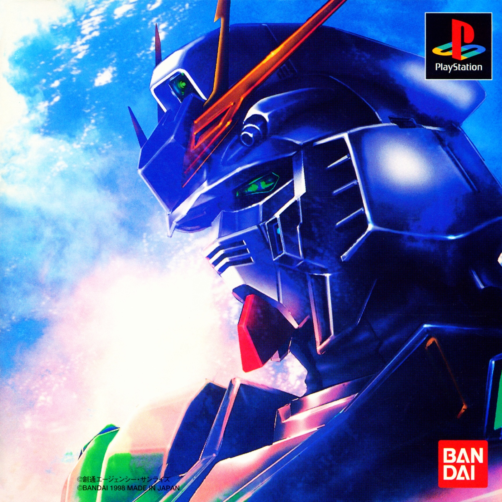
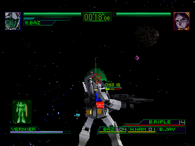
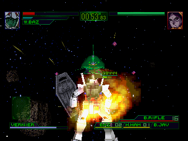
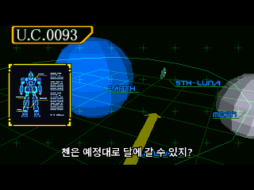
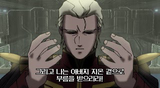

게임 속 일본어를 한국어로
텍스트와 이미지의 일본어를 번역하고, 스테이지 제목은 원본 분위기에 어울리는 글꼴로 작업했습니다.
기동전사 건담
그날의 전투를, 이제 한국어로.
작전 브리핑부터 전투 속 대화, 애니메이션까지
이야기의 흐름을 한국어 자막으로 따라가세요.

01 / ABOUT THE PATCH
일본어로만 전해지던 대사와 작전 설명에
한국어 번역을 더했습니다.
텍스트와 이미지의 일본어를 번역하고, 스테이지 제목은 원본 분위기에 어울리는 글꼴로 작업했습니다.
애니메이션, 게임 내 대화, 3D 전황·작전 설명에 자막을 넣었습니다. 대화는 화자별로 나눠 표시합니다.
엔딩곡 가사에도 한국어 자막을 더했습니다. 영어 문구와 크레딧의 인명·회사명은 원문을 유지했습니다.
02 / IN GAME
이미지를 누르면 크게 볼 수 있습니다.

확대
확대
확대
확대패치 적용본의 전투 화면과 자막 예시입니다. 화면 확대 시 원본 해상도에 따른 픽셀이 보일 수 있습니다.
03 / INSTALLATION
Windows 10/11 64비트용 적용 도구가
포함되어 있습니다.
일본판 원본 CUE 1개
원본 Track 1 · Track 2 BIN 2개
다운로드한 파일을 원하는 폴더에 압축 해제하세요. 압축파일 안에서 바로 실행하지 마세요.
Gundam_CCA_Korean_Patch.zip아래 파일을 실행한 뒤 원본 CUE를 선택하세요. 원본 CUE를 이 파일 위로 끌어 놓아도 됩니다.
Apply_Korean_Patch.cmd완료 후 Patched_KO 폴더의 아래 파일을 사용하는 PS1 에뮬레이터에서 여세요. 생성된 BIN 2개도 같은 폴더에 두세요.
Gundam_CCA_KO.cue이전 빠른 저장 상태(세이브 스테이트) 대신 새 CUE로 부팅하세요. 게임 내 메모리카드 저장은 사용할 수 있습니다.
덕스테이션 사용 시, 아무로편 1스테이지 출격 전 브라이트·세이라와의 대화에서 이미지가 버벅이는 현상이 발생할 수 있습니다. 그 이후는 에러 발생 없음(검수 완료).
04 / DOWNLOAD
일본판 원본에 적용하는 한글패치입니다.
게임 원본과 BIOS는 포함하지 않습니다.
fbab8ccd80c61f8345211de85260bd469c8ce4d1b5b4cbc8cad2d92d9f9566a105 / BEFORE YOU PLAY
Mobile Suit Gundam - Char's Counterattack (Japan)의 두 트랙 BIN/CUE를 지원합니다. Track 1은 MODE2/2352, Track 2는 AUDIO 형식입니다. CHD·ISO·단일 BIN에는 직접 적용할 수 없습니다.
적용 도구가 아래 크기와 SHA-256을 자동으로 검사합니다.
10dfc20c1857553e68ef689ffc2255c551806a4b745a2aaa66b0476596a9f3a17f77c62059a5d311a8e75afc534e18a20de6161283a3b1842a622bb85ece660eCUE/BIN을 지원하는 PS1 에뮬레이터에서 실행하세요. 덕스테이션 전용 패치가 아닙니다.
패치의 음성·자막 재생 검수에는 Beetle PSX(libretro)를 사용했습니다.
덕스테이션 사용 시, 아무로편 1스테이지 출격 전 브라이트·세이라와의 대화에서 이미지가 버벅이는 현상이 발생할 수 있습니다. 그 이후는 에러 발생 없음(검수 완료).
Track 1에 패치를 적용하고, Track 2는 원본 그대로 복사합니다. 적용 도구가 두 BIN에 맞는 새 CUE까지 자동으로 만듭니다. 원본 파일은 덮어쓰지 않습니다.
네. 패치 완료 후 Patched_KO 안의 CUE와 BIN 2개를 함께 둔 상태에서 새 CUE를 기준으로 CHD를 만드세요. 원본 Track 2를 따로 가져올 필요는 없습니다.
원본 크기·해시가 다르면 지원하는 일본판 원본인지 확인하세요. 파일을 찾지 못한다면 CUE에 적힌 이름과 실제 BIN 이름을 확인하세요. Patched_KO가 이미 있으면 다른 곳으로 옮긴 뒤 다시 적용하세요.
자세한 안내는 패치에 포함된 README_KO.txt에서 확인할 수 있습니다.
AI 검수와 사용자 플레이 검수를 모두 거친 배포판입니다.
AI 검수: Beetle PSX(libretro)를 사용해 음성·자막 재생, 표시 위치와 타이밍 등을 확인했습니다.
사용자 검수: 덕스테이션(DuckStation)에서 직접 플레이하며 번역·자막과 게임 진행을 확인했습니다.
동봉 도구로 원본에 패치를 적용한 결과가 최종 검수판의 두 BIN과 바이트 단위로 같은지도 확인했습니다. 적용 도구도 실행할 때 결과 파일을 검증합니다.